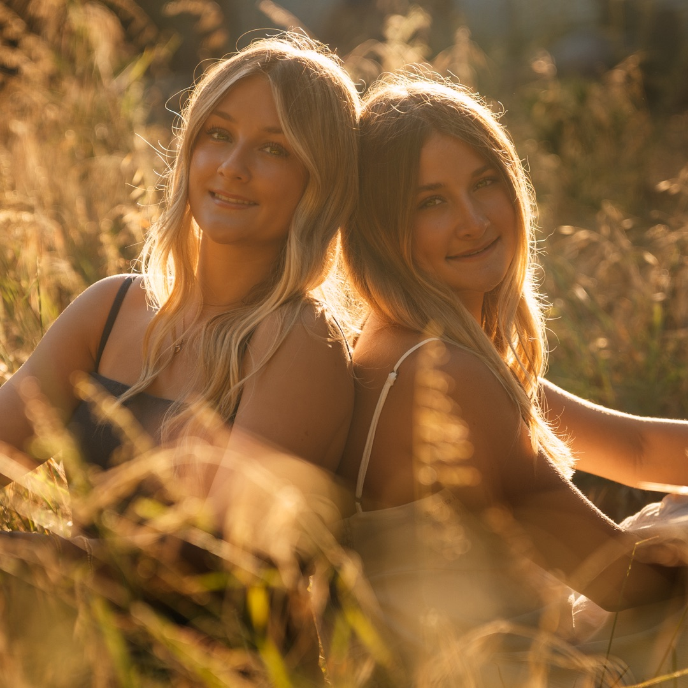

What to Wear for Senior Portraits on the Central Coast
What works for senior portraits in a studio, in the suburbs, or anywhere that isn't the 805 doesn't always translate here. The Central Coast has a specific look — the light, the landscape, the wind off the Pacific — and the sessions that feel most alive are the ones that work with it.
This isn't a generic style guide. It's written for families in Arroyo Grande, Pismo Beach, SLO, Avila, Edna Valley, Grover Beach, and everywhere in between. Where you're shooting, what the light does at different times of day, and yes — the wind — all of it matters when you're choosing what to wear.
Here's what I've learned from shooting senior portraits across the Central Coast over the years.
Where you're shooting shapes everything
The Central Coast isn't one landscape — it's a dozen. Beach, hills, vineyards, small-town streets, open farmland. Your outfit should feel like it belongs in the environment. When it does, the whole session looks intentional. When it doesn't, something always feels slightly off in the final images.
Pismo, Avila, Oceano, Morro Bay
Sand and ocean create a warm, neutral backdrop. Earth tones, cream, soft sage, and dusty blue all sit naturally against the coast. Bright white reads a little expected here — ivory or warm cream is more interesting and photographs better in coastal light. Wind is significant (more on that below), so plan accordingly.
Edna Valley, Biddle Ranch Rd, SLO backcountry, Lopez Lake area
The signature Central Coast look — tall golden grass, oak trees, warm amber light in late afternoon. This is where earth tones are completely in their element: terracotta, rust, camel, warm cream, olive. These locations run warm in late afternoon and calmer than the coast, but bring a layer — once the sun drops, the temperature follows.
Arroyo Grande Village, downtown SLO, architectural settings
More versatile than the natural settings. Slightly richer colors and even subtle patterns can work here because there's existing visual texture in the environment. Dusty rose, deep green, soft yellow, classic denim — all are fair game. If you want to be slightly more expressive with your style, this is the setting for it.
The best sessions look like the person belongs in the landscape — not like they paused a photoshoot to stand in front of it.
The two kinds of light here
The Central Coast runs on two distinct lighting modes, and they're worth understanding before you plan your outfits.
Marine layer mornings on the coast. Morning sessions often start under soft coastal fog — diffused, shadowless light that's genuinely flattering in ways that are hard to recreate artificially. In this light, avoid very bright white. It tends to blow out and read clinical rather than clean. Soft neutrals, pastels, and earth tones work perfectly. The cooler light temperature also means cooler-toned colors — sage, dusty blue, lavender — look especially natural and calm.
Golden hour inland. Once you get a few miles from the water, particularly in late spring and summer, late afternoon light turns the hillside grass to amber. Almost any color works in golden-hour light, but warm tones are transcendent here — terracotta, rust, warm cream, camel. If you want the full Central Coast look that you've probably seen in photos from sessions out in the hills, this is the light that creates it. It typically lasts 45 minutes to an hour before it's gone, so we work efficiently.
If you have two outfit changes, consider matching them to the setting: a softer, cooler palette for coastal or morning shots, and a warmer earth-tone look for the hillside or golden-hour portion of the session.
About the wind — be honest with yourself here
The Central Coast is windy, especially within a mile of the water. I'll be straight: Pismo and Avila are often genuinely breezy, and Oceano is sometimes outright windy. This doesn't need to ruin anything — wind creates movement and energy in photos that looks incredible — but it means a few things practically.
Flowy skirts and dresses photograph beautifully in wind. The movement is a feature, not a flaw. But come prepared for between-shots management. Fabric that constantly pulls at you or needs adjusting makes the session feel stressful, and that shows. A flowy midi dress in linen? Great. A strapless minidress that needs constant repositioning? Harder to work with.
Hair is the bigger variable. Loose styles that move naturally in wind tend to look intentional. What doesn't work is a style that falls apart in the first ten minutes and becomes the thing you're thinking about instead of just being present. A half-up look, a braid, or committing to natural movement all tend to work better than fighting the coast. If you know your hair doesn't cooperate in wind, inland sessions are generally calmer — especially in sheltered spots in the hills.
Inland is calmer. If wind is a genuine concern — or if you want a session that feels a little more controlled — scheduling in the hills rather than on the coast solves most of it.
How many outfits — and what each one should do
Two to three looks is the sweet spot for most sessions. More than that and you spend too much time transitioning; fewer can feel limiting if you want visual variety across your gallery.
Something that feels like you
Your everyday style, just intentionally put together. What would you wear on a day you felt like yourself and also happened to look good? That. This is usually the most personal and relaxed look of the session.
One step elevated
Not formal. Not costume-y. Just slightly more considered — a dress or outfit that feels a little more intentional than your everyday default. This is often the look that ends up on the wall.
Personality-specific (optional)
Varsity jacket. Baseball cleats. Your instrument. A sport jersey or uniform. Whatever tells part of your story that the other looks don't. This is especially relevant if there's an activity that's defined your senior year — it's worth documenting that specifically.
Colors and textures that work here
The Central Coast palette is warm, organic, and natural. The best outfits don't compete with the landscape — they complement it. Here's what consistently photographs well against our specific environment.
Earth tones:
Coastal and muted tones:
Textures that photograph well outdoors: Linen, cotton, soft knit, chambray, and lightweight denim all catch natural light the way you want them to. Matte, breathable fabrics look natural and move well. Synthetic fabrics with sheen — satin, polyester blends — tend to catch light harshly in outdoor settings and can look cheaper in photos than they do in person.
What tends to struggle: Very bright or neon colors pull focus from your face and don't complement the natural landscape here. Busy patterns and heavy graphics — logos especially — date quickly and compete with the background. Very shiny fabrics rarely look the way you expect in outdoor light.
One thing that matters more than any of this
Comfort. If you're uncomfortable in what you're wearing, that feeling shows in photos. Not in an obvious way — more in the small stuff. The way you hold your shoulders. Whether you can sit on a hillside, walk across sand, or climb a small rock without worrying. Whether you're constantly thinking about your outfit instead of just being present.
Wear something you could spend two hours outdoors in without thinking about it. Don't break in new shoes at your session. Don't wear something that felt good in your bedroom but makes you self-conscious the moment you step outside.
The photos where people look most like themselves are almost always the ones where they forgot they were being photographed. That starts with being comfortable in what you're wearing.
Ready to Plan Your Session?
Summer 2026 sessions are open. Lock in your date with a $100 deposit, or reach out to talk through timing and locations first.
About TWM Stories
TWM Stories is the Central Coast's story-driven photo and film experience, based in Arroyo Grande and serving families across San Luis Obispo, Pismo Beach, Grover Beach, Nipomo, and surrounding 805 communities. Ngā Kōrero Ora — Living Stories. Every session is built around capturing something real rather than manufacturing something perfect.